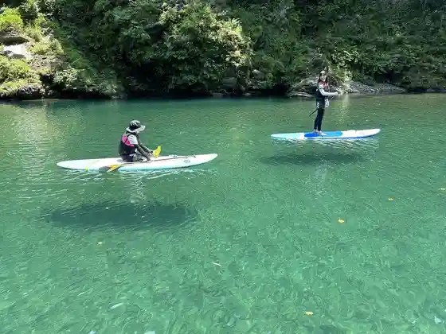
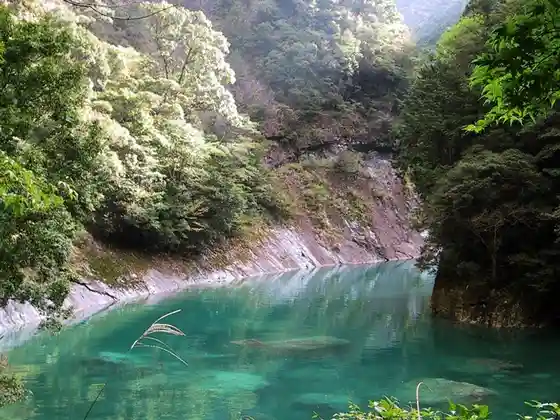
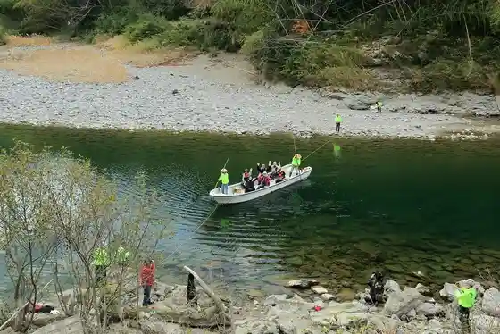

River Ⅾrift Miyagawa
Odai, Mie · Official / source link

Miyagawa Joryu
Odai, Mie · 0598-77-2110 · Official / source link

Odai Ya Ki I no Himawari
Odai, Mie · 0598-84-1050 · Official / source link
Mitsuse no Watashi
Odai, Mie · 0598-84-1050 · Official / source link

Ko Minka Yado Haru no Ya
Odai, Mie · 0598-85-0069 · Official / source link
Kyanpusutairu no Yado Kisekirei
Odai, Mie · 070-1849-9842 · Official / source link
Kyanpusutairu no Yado Yume Raku
Odai, Mie · 070-1849-9842 · Official / source link
Buruberii Odai
Odai, Mie · 090-2689-0762 · Official / source link
Chaya Ichi Gan Jizo Sakuramichi
Odai, Mie · 0598-84-1050 · Official / source link
Sakura no Sato Park
Odai, Mie · 0598-84-1050 · Official / source link
Mitsuse Tani Dam Cherry Blossoms
Odai, Mie · 0598-84-1050 · Official / source link
Sanjo Yama
Odai, Mie · 0598-84-1050 · Official / source link
Maruyama Park Mate Park
Odai, Mie · 0598-84-1050 · Official / source link
bistarai
Odai, Mie · 070-9251-7062 · Official / source link
Kaorimusubi (Thousand Leaves)
Odai, Mie · Official / source link
RocaRoca Akuteibitei
Odai, Mie · 070-1849-9842 · Official / source link
Okuma Miyama (Mei Gaku Shirokura Yama Kogamaruyama)
Odai, Mie · 0598-84-1050 · Official / source link
Takiya Hibara no Kawagishi Ganpeki Shokubutsu Gunraku
Odai, Mie · 0598-84-1050 · Official / source link
Osugi Tani no Osugi
Odai, Mie · 0598-84-1050 · Official / source link
Miyagawa Damu Mizumi
Odai, Mie · 0598-84-1050 · Official / source link
Mitsuse Tani Shrine
Odai, Mie · Official / source link
Osugi Gorge
Odai, Mie · 0598-78-3338 · Official / source link
Osugi Tani
Odai, Mie · 0598-84-1050 · Official / source link
Ue Mitsuse no Village Park
Odai, Mie · Official / source link
Aizu Toge no Yamazakura
Odai, Mie · Official / source link
Cho Ke Bridge
Odai, Mie · Official / source link
Odai Tourism Association (Oku Ise Terasu)
Odai, Mie · 0598-84-1050 · Official / source link
Uratani Oto Campground
Odai, Mie · 0598-76-0044 · Official / source link
AWA Rabo
Odai, Mie · 090-1586-1604 · Official / source link
Hinodegagaku
Odai, Mie · 0598-84-1050 · Official / source link
Awaya Koya
Odai, Mie · 080-5112-3808 · Official / source link
Momo no Kiyama no Ie
Odai, Mie · 0597-32-2052 · Official / source link
Roadside Station Oku Ise Odai
Odai, Mie · 0598-84-1010 · Official / source link
Roadside Station (Oku Ise Odai)
Odai, Mie · 0598-84-1010 · Official / source link
Shita Mitsuse Kakko Odori
Odai, Mie · 0598-84-1050 · Official / source link
Akagi Mine Rei Fu Yamadai Yo Tera
Odai, Mie · 0598-76-1075 · Official / source link
Mitsuse Torideato
Odai, Mie · 0598-84-1050 · Official / source link
Kawazoe Shrine (Gomikake no Miya)
Odai, Mie · 0598-84-1050 · Official / source link
Somon Yama
Odai, Mie · 0598-84-1050 · Official / source link
Osugi Tani Shizengaku Ko
Odai, Mie · 0598-78-8888 · Official / source link
Ao Toshu Ko
Odai, Mie · Official / source link
nijiiro
Odai, Mie · 080-7956-1481 · Official / source link
Odai Ritsu Library
Odai, Mie · 0598-84-1100 · Official / source link
SUP (Miyagawa)
Odai, Mie · 0598-84-1050 · Official / source link
Hokuso Mon Yama Lookout Kareraisu Shutcho Sabisu
Odai, Mie · Official / source link
Nanatsu Kama Taki
Odai, Mie · 0598-84-1050 · Official / source link
Do Kura Taki
Odai, Mie · 0598-84-1050 · Official / source link
Mitsuse Tani Damu Mizumi (Oku Ise Mizumi)
Odai, Mie · 0598-84-1050 · Official / source link
Wanko no Mori Asobi
Odai, Mie · Official / source link
Obuchi Tera no Sudajii
Odai, Mie · 0598-84-1050 · Official / source link
Rokuju Jin Taki
Odai, Mie · 0598-84-1050 · Official / source link
Kitabatake Gu Kyo Mitsuse Yakatato
Odai, Mie · 0598-84-1050 · Official / source link
Somon Yama Hokuso Mon Yama
Odai, Mie · 0598-84-1050 · Official / source link
Verde Autodoapuroguramu
Odai, Mie · 080-4840-7315 · Official / source link
Mori He Iku Nichi
Odai, Mie · 0598-84-1050 · Official / source link
Kisei Jidoshado (Oku Ise Parking Area) Nobori Sen
Odai, Mie · 0598-83-6515 · Official / source link
Kisei Jidoshado (Oku Ise Parking Area) Kudari Sen
Odai, Mie · 0598-83-6505 · Official / source link